New Experiments
Last updated: 2024-07-05
Checks: 7 0
Knit directory: mvmr_website/
This reproducible R Markdown analysis was created with workflowr (version 1.7.0). The Checks tab describes the reproducibility checks that were applied when the results were created. The Past versions tab lists the development history.
Great! Since the R Markdown file has been committed to the Git repository, you know the exact version of the code that produced these results.
Great job! The global environment was empty. Objects defined in the global environment can affect the analysis in your R Markdown file in unknown ways. For reproduciblity it’s best to always run the code in an empty environment.
The command set.seed(20221205) was run prior to running
the code in the R Markdown file. Setting a seed ensures that any results
that rely on randomness, e.g. subsampling or permutations, are
reproducible.
Great job! Recording the operating system, R version, and package versions is critical for reproducibility.
Nice! There were no cached chunks for this analysis, so you can be confident that you successfully produced the results during this run.
Great job! Using relative paths to the files within your workflowr project makes it easier to run your code on other machines.
Great! You are using Git for version control. Tracking code development and connecting the code version to the results is critical for reproducibility.
The results in this page were generated with repository version 32197ca. See the Past versions tab to see a history of the changes made to the R Markdown and HTML files.
Note that you need to be careful to ensure that all relevant files for
the analysis have been committed to Git prior to generating the results
(you can use wflow_publish or
wflow_git_commit). workflowr only checks the R Markdown
file, but you know if there are other scripts or data files that it
depends on. Below is the status of the Git repository when the results
were generated:
Ignored files:
Ignored: .DS_Store
Ignored: backup/
Ignored: data/.DS_Store
Ignored: data/results/.DS_Store
Ignored: data/results_true_gx/uncor_plei_gy_0.2_zx_0.2_zy_0.2/
Untracked files:
Untracked: data/summary_of_results_annih_max.tsv
Untracked: data/summary_of_results_noannih_clumped.tsv
Unstaged changes:
Modified: analysis/_site.yml
Modified: analysis/famrsims.Rmd
Modified: analysis/realdata.Rmd
Note that any generated files, e.g. HTML, png, CSS, etc., are not included in this status report because it is ok for generated content to have uncommitted changes.
These are the previous versions of the repository in which changes were
made to the R Markdown (analysis/experimental.Rmd) and HTML
(docs/experimental.html) files. If you’ve configured a
remote Git repository (see ?wflow_git_remote), click on the
hyperlinks in the table below to view the files as they were in that
past version.
| File | Version | Author | Date | Message |
|---|---|---|---|---|
| Rmd | d600faa | Nathan LaPierre | 2024-07-01 | added page for real data analysis |
| html | d600faa | Nathan LaPierre | 2024-07-01 | added page for real data analysis |
| Rmd | 96b5c8a | Nathan LaPierre | 2024-02-06 | added ctwas individual level and 2 sample results |
| html | 96b5c8a | Nathan LaPierre | 2024-02-06 | added ctwas individual level and 2 sample results |
| Rmd | e50dfe9 | Nathan LaPierre | 2024-01-23 | added plots for ctwas, group prior, and varbvs.ss results |
| html | e50dfe9 | Nathan LaPierre | 2024-01-23 | added plots for ctwas, group prior, and varbvs.ss results |
| Rmd | 236704d | Nathan LaPierre | 2024-01-23 | added ctwas, group prior, and varbvs.ss sim results |
| Rmd | c8fe277 | Nathan LaPierre | 2023-10-17 | added mr.ash.ss results with zscore version |
| html | c8fe277 | Nathan LaPierre | 2023-10-17 | added mr.ash.ss results with zscore version |
| Rmd | 1d0517a | Nathan LaPierre | 2023-10-03 | added brms, susie.ss, and mrash.ss results; split into new analysis file, experimental.Rmd |
| html | 1d0517a | Nathan LaPierre | 2023-10-03 | added brms, susie.ss, and mrash.ss results; split into new analysis file, experimental.Rmd |
Simulation description
We simulate according to the following DAG:
Here, G are the Genotypes, X are the exposure phenotypes, Y is the outcome phenotype, and Z are confounders. All except Y are expected to be multivariate. The edge variables signify effects between these variables. Let \(M\) be the number of SNPs, \(K\) be the number of exposures, and \(J\) be the number of confounders.
The structural equation model for this DAG is:
\[Z = G\theta_{GZ} + \epsilon_Z\] \[X = G\theta_{GX} + Z\theta_{ZX} + \epsilon_X\] \[Y = X\theta_{XY} + G\theta_{GY} + Z\theta_{ZY} + \epsilon_Y\]
G is assumed fixed or is drawn from standard normal distributions. Define
\[\psi_X = \theta_{GZ} * \theta_{ZX}\] \[\psi_Y = \theta_{GZ} * \theta_{ZY}\] Then \(\psi_X\) defines the heritability of X mediated through Z, \(\psi_Y\) defines the confounding effect from G to Y that is correlated with X, and \(\theta_{GY}\) defines the confounding effect from G to Y that is not correlated with X.
By default, \(\theta_{XY}\) are fixed effects specified by the user, which allows control over the strength of effects in the simulation. All other effects \(theta_i\) (where \(i\) is a stand-in for \(GX\), \(GY\), and so on) are drawn according to point-(multivarite-)normal distributions,
\[\theta_i = f_i * \gamma^*_{i},\]
where f is the point-(multivariate-)normal,
\[f_i \sim \pi_{0,i}\delta + \pi_{1,i}\mathcal{N}_d(\mu, \Sigma_{i}),\]
where \(\delta\) is the Dirac delta function and \(d\) is the dimensionality of the effected variable, i.e. \(J\) if the effect is on \(Z\), \(K\) for \(X\), or \(1\) for \(Y\). \(\mu\), the mean parameter, is set to 0 by default, but can be set to non-zero values to allow “directional pleiotropy”. \(\Sigma_i\) is currently taken to be a diagonal matrix, but could be generalized to allow correlated effects.
\(\pi_{0,i}\) represents the amount of sparsity while \(\pi_{1,i}\) represents the density, and \(\pi_{0,i} + \pi_{1,i} = 1\). In practice this is achieved by first simulating the multivariate normal, then multiplying each entry by \(\pi_{1,i}\), which is drawn separately for each entry according to
\[\pi_{1,i} \sim Bernoulli(\phi_i),\]
where \(\phi_i\) is a parameter that controls the level of density. By default, the density of \(\theta_{ZY}\) is set to 1 (\(\phi_{ZY}=1\)) because if some \(Z_j\) does not affect \(Y\) then it is not a confounder.
Finally, \(\gamma_i\) represents the scaling parameter to achieve the desired \(R^2\). \(G\), \(Z\), \(X\), and \(Y\) are controlled to have unit variance (see simulation of noise below). For \(G\) to have the desired \(R^2\) (heritability) on \(Z\), \(X\), or \(Y\), we need to adjust this parameter by the number of SNPs and the sparsity of the effects. Therefore, the per-SNP \(\gamma_i^*\) is
\[\gamma^*_{i} = \sqrt{\gamma_{i} / M / \phi_i}\]
The noise variances, epsilon, are designed so that Z, X, and Y have unit variance. So they are simulated according to
\[\epsilon_Z \sim \mathcal{N}_J(0, \xi_Z I_J)\] \[\epsilon_X \sim \mathcal{N}_K(0, \xi_Z I_K)\] \[\epsilon_Y \sim \mathcal{N}(0, \xi_Y)\]
where
\[\xi_Z = 1 - \gamma_{GZ}\] \[\xi_X = 1 - \gamma_{GX} - \gamma_{ZX}\] \[\xi_y = 1 - \gamma_{GY} - \gamma_{ZY} - \sum_i \theta_{XY,i}^2\]
Baseline Methods Assessed
- “2SLS”: vanilla two-stage least squares implemented by me. I first perform multiple regression of each \(X_j\) on \(G\), obtaining an estimate \(\hat{\tilde{X}}\) of the genetic component of X, \(\tilde{X}\). I then regress \(Y\) on \(\hat{\tilde{X}}\) (second-stage regression).
\[X_1,...,X_K \sim G \rightarrow \hat{\tilde{X}}\] \[Y \sim \hat{\tilde{X}} \rightarrow \hat{\theta}_{XY}, pvalue\]
- “2SLS Oracle”: This is an augmented version of 2SLS where, in the second-stage regression, I include the true values of \(G\theta_{GZ}\) (which is equal to the genetic component of Z, \(\tilde{Z}\)) and \(G\theta_{GY}\) as covariates. This represents the ideal performance of 2SLS if the true confounders were known (“oracle” setting), though it may be beatable by putting appropriate sparse priors on the confounders.
\[X_1,...,X_K \sim G \rightarrow \hat{\tilde{X}}\] \[Y \sim \hat{\tilde{X}} + \tilde{Z} + G\theta_{GY} \rightarrow \hat{\theta}_{XY}, pvalue\]
- “2SLS Enhanced”: This is an augmented version of 2SLS where, in the second stage regression, I include estimates of \(G\theta_{GZ}\) and \(G\theta_{GY}\) that can be obtained without knowing the true values. The former is estimated by running SVD on \(\hat{\theta}_{GX}\). The latter is estimated by regressing \(X\) out of \(Y\) and then regressing those residuals on \(G\).
\[X_1,...,X_K \sim G \rightarrow \hat{\tilde{X}}\]
\[SVD(\hat{\theta}_{GX}) \rightarrow \widehat{\theta_{GZ}\theta_{ZX}} = \hat{\psi}_X\] \[Y \sim X \rightarrow \hat{Y}_{resid}\] \[\hat{Y}_{resid} \sim G \rightarrow \hat{\theta}_{GY}\] \[Y \sim \hat{\tilde{X}} + G\hat{\psi}_x + G\hat{\theta}_{GY} \rightarrow \hat{\theta}_{XY}, pvalue\]
- SuSiE-SVD: This performs the same first-stage regression as 2SLS, then runs runs the SuSiE R package for the second-stage regression. Along with \(\hat{\tilde{X}}\), we include the SNPs \(G\) to attempt to control for uncorrelated pleiotropy as well as an estimate of the confounders \(\hat{\tilde{Z}}\), produced by running truncated singular value decomposition (SVD) on \(\hat{\tilde{X}}\), to attempt to control for correlated pleiotropy. We give a slightly incorrect value for the true number of confounders to SVD.
\[X_1,...,X_K \sim G \rightarrow \hat{\tilde{X}}\] \[SVD(\hat{\tilde{X}}) \rightarrow \hat{\tilde{Z}} = G\hat{\theta}_{GZ}\]
\[susieR::susie(Y \sim \hat{\tilde{X}} + G + \hat{\tilde{Z}}) \rightarrow \hat{\theta}_{XY}, pvalue\]
- Multivariate versions of four standard MR methods, implemented in the MendelianRandomization package: IVW, Egger, Median, and Lasso. For each of these, I first regress each \(X_j\) and \(Y\) on each genetic variant. The betas and standard errors from these per-variant regressions (mimicking summary statistics) are given to the methods as input.
\[X_i \sim G_j \rightarrow \hat{\beta}_{ij}, \hat{s}^2_{ij} \qquad Y \sim G_j \rightarrow \hat{\beta}_{yj}, \hat{s}^2_{yj}\] \[MendelianRandomization::MVMR\_IVW(\hat{\beta}, \hat{s}^2) \rightarrow \hat{\theta}_{XY}, pvalue\]
Bayesian Robust Regression
Below are some results using Bayesian Robust Regression, implemented with BRMS. The inputs to the regression are the same as with any other summary statistic method. The outcome is modeled using a t-distribution for robustness. The prior for the effects is either normal or horseshoe (hs), the latter for sparsity. A test was performed for the probability of false sign, i.e. \(max(p(\hat{\theta}_{XY_i} > 0), p(\hat{\theta}_{XY_i} < 0))\).
A repeat pattern is that brms with a normal prior is inflated in all cases, while brms.hs is conservative. However, both perform well in causal ordering, and are more robust to the M/K ratio than MVMR-Robust (and will run when M>K).
Here is a run with no pleiotropy.
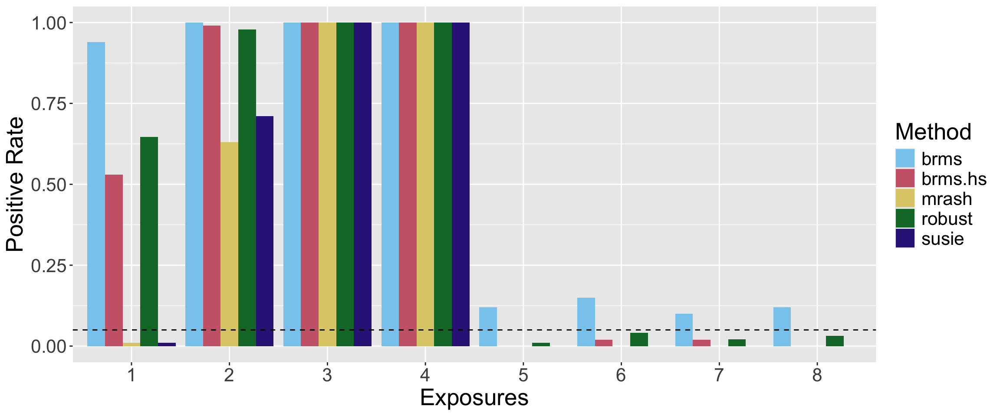
Now here’s a run with both kinds of pleiotropy.
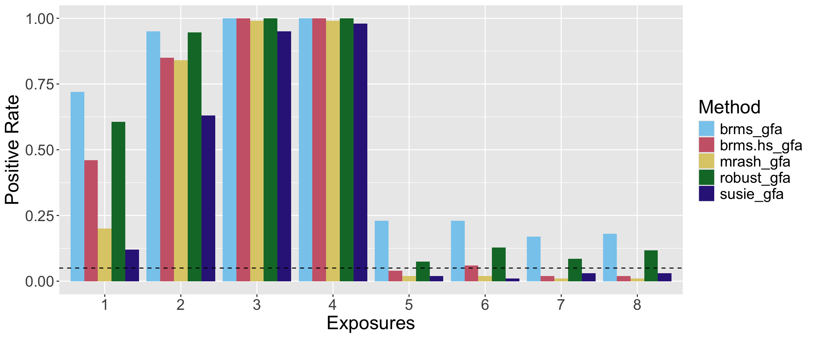
And here’s the power at an FPR threshold of 0.05:
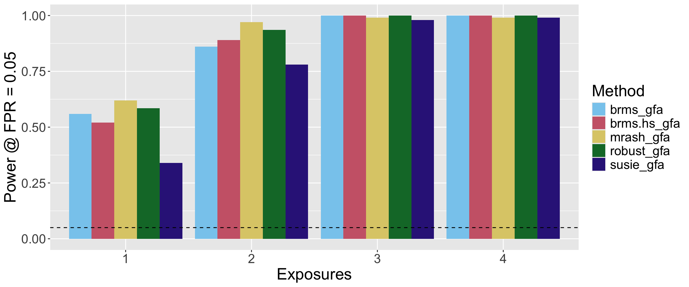
We see that robust does pretty well, as expected, though all methods achieve good ordering. At a fixed p-value cutoff of 0.05, robust is a bit inflated.
But now here’s a setting with M=100 (M=300 previously) and denser theta_gx and theta_gy. This setting is generally more difficult, but as before, robust suffers especially.
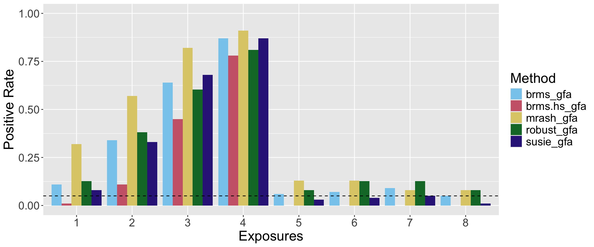
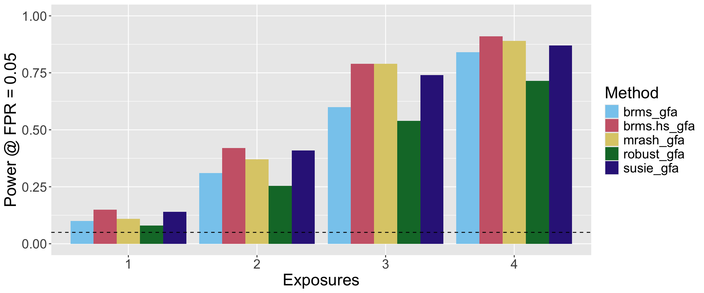
Summary Statistics versions of Susie, MR.Ash, and VarBVS
Here, since the vanilla simulations have uncorrelated variants, I simply fed these methods x_betas and y_betas instead of X and Y (did not use Susie_RSS).
Here is a run with no pleiotropy.
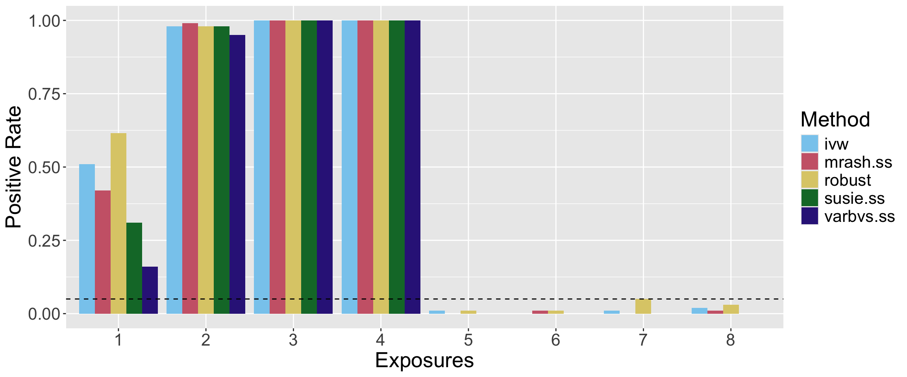
Here is the power at a fixed FPR threshold of 0.05:
cTWAS Results
I re-implemented cTWAS-RSS, checked that it matched the original, and ran it on the UK Biobank simulations. For now, I excluded SNPs with z-scores below 5.2, but did no other thinning. cTWAS-RSS currently shows lower power than the most comparable method, susie.ss, but as expected, is much more robust to uncorrelated pleiotropy.
Here are the results with no pleiotropy:

And here are the results with uncorrelated pleiotropy:
Prior weights and variances for susie and varbvs
Here I did experiments where I manually set prior weights for susie and varbvs. For the prior weights I gave the true proportions of exposures and SNPs that were causal. For prior variance, I just used 0.01. Despite this, the prior variance made a big difference in the results of susie and even more so for varbvs. It seems that varbvs usually estimates a too-high prior variance (more like ~0.5) and this causes its true positive rate to be low despite good power at a fixed FPR.
Here are the results with no pleiotropy:

We see a similar pattern with uncorrelated pleiotropy:
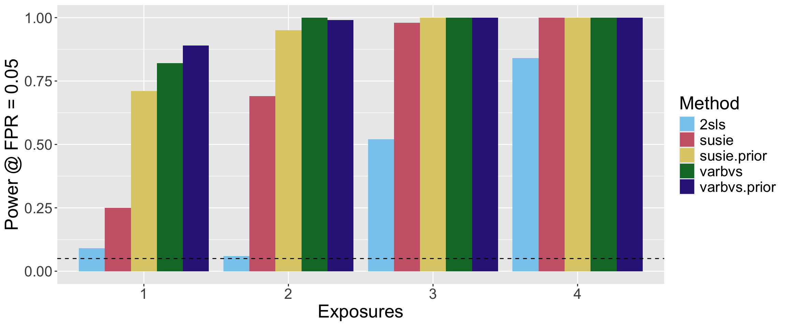
cTWAS individual level
Here I ran my implementation of individual-level cTWAS on my UK Biobank sims. SNP selection was performed with mvSusie. Note that here I intersected the SNPs that passed the cTWAS filter with those selected by mvSusie. This increased SNP selection precision which increased power. Unless otherwise noted, the setting for susieL was 5.
Here are the results with no pleiotropy. cTWAS does pretty well at variant prioritization, while it lags in absolute power behind varbvs with cTWAS priors. Surprisingly, 2sls and brms.hs are inflated despite no pleiotropy, probably due to some “false positive” variants being selected.
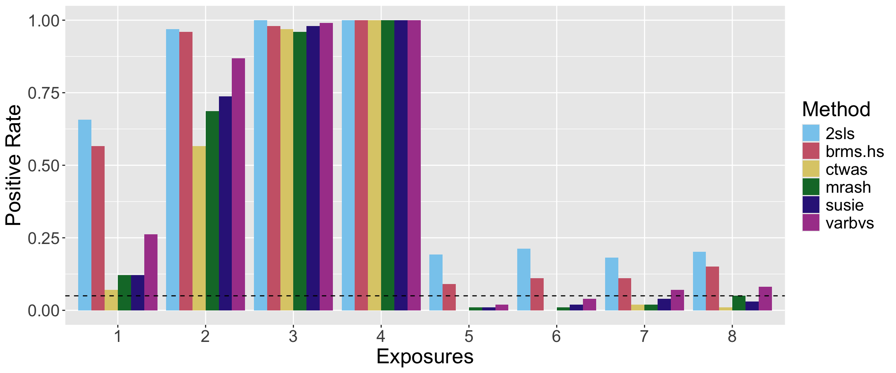
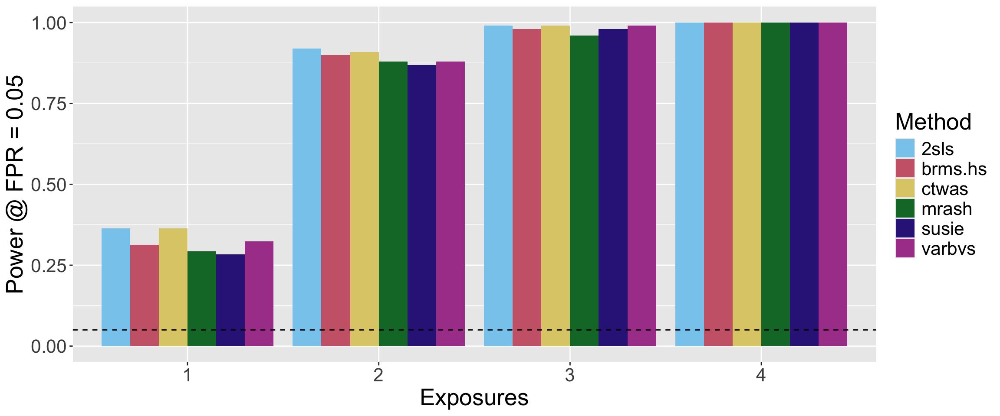
Here are the results with uncorrelated pleiotropy. I also show that increasing susieL to 20 for cTWAS helps, since with some true G–>Y effects there are more than 5 total effects now. Absolute power still decreases, but prioritization still works fairly well.
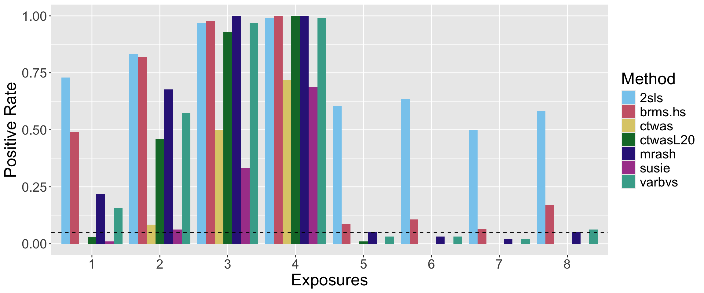
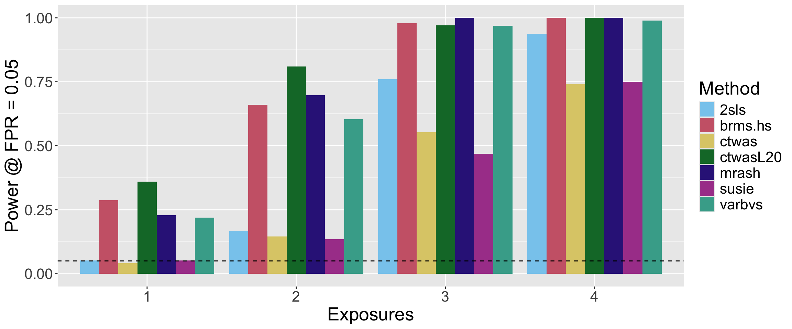
UK Biobank Two Sample Test
Here are the results in a two sample setting with no pleiotropy (preliminary):
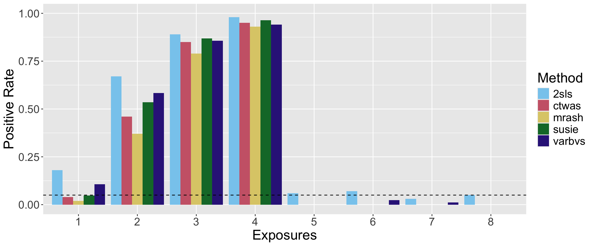
sessionInfo()R version 4.2.1 (2022-06-23)
Platform: x86_64-apple-darwin17.0 (64-bit)
Running under: macOS Big Sur ... 10.16
Matrix products: default
BLAS: /Library/Frameworks/R.framework/Versions/4.2/Resources/lib/libRblas.0.dylib
LAPACK: /Library/Frameworks/R.framework/Versions/4.2/Resources/lib/libRlapack.dylib
locale:
[1] en_US.UTF-8/en_US.UTF-8/en_US.UTF-8/C/en_US.UTF-8/en_US.UTF-8
attached base packages:
[1] stats graphics grDevices utils datasets methods base
other attached packages:
[1] ggpubr_0.6.0 ggplot2_3.5.0 DiagrammeR_1.0.10 workflowr_1.7.0
loaded via a namespace (and not attached):
[1] tidyselect_1.2.0 xfun_0.39 bslib_0.5.0 purrr_1.0.1
[5] carData_3.0-5 colorspace_2.1-0 vctrs_0.6.5 generics_0.1.3
[9] htmltools_0.5.5 yaml_2.3.7 utf8_1.2.4 rlang_1.1.3
[13] jquerylib_0.1.4 later_1.3.1 pillar_1.9.0 glue_1.7.0
[17] withr_3.0.0 RColorBrewer_1.1-3 lifecycle_1.0.4 stringr_1.5.0
[21] ggsignif_0.6.4 munsell_0.5.1 gtable_0.3.4 visNetwork_2.1.2
[25] htmlwidgets_1.6.2 evaluate_0.21 labeling_0.4.3 knitr_1.43
[29] callr_3.7.3 fastmap_1.1.1 httpuv_1.6.11 ps_1.7.5
[33] fansi_1.0.6 highr_0.10 broom_1.0.5 Rcpp_1.0.12
[37] backports_1.4.1 promises_1.2.0.1 scales_1.3.0 cachem_1.0.8
[41] jsonlite_1.8.7 abind_1.4-5 farver_2.1.1 fs_1.6.3
[45] digest_0.6.33 stringi_1.8.3 rstatix_0.7.2 processx_3.8.2
[49] dplyr_1.1.2 getPass_0.2-2 rprojroot_2.0.3 grid_4.2.1
[53] cli_3.6.2 tools_4.2.1 magrittr_2.0.3 sass_0.4.7
[57] tibble_3.2.1 car_3.1-2 tidyr_1.3.0 whisker_0.4.1
[61] pkgconfig_2.0.3 ellipsis_0.3.2 rmarkdown_2.23 httr_1.4.6
[65] rstudioapi_0.15.0 R6_2.5.1 git2r_0.32.0 compiler_4.2.1